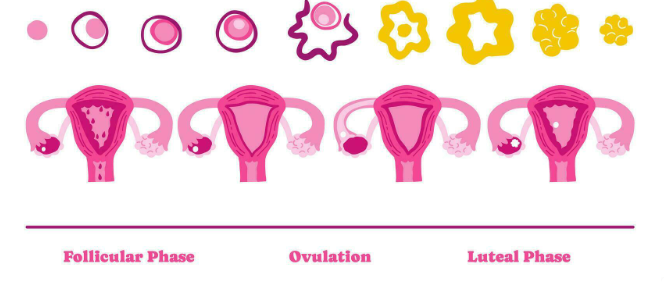
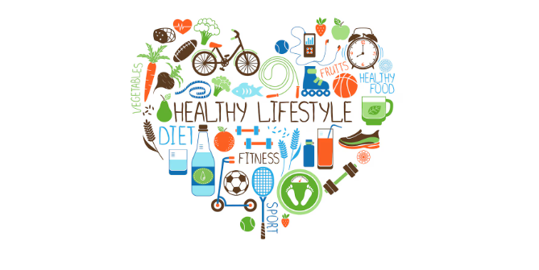
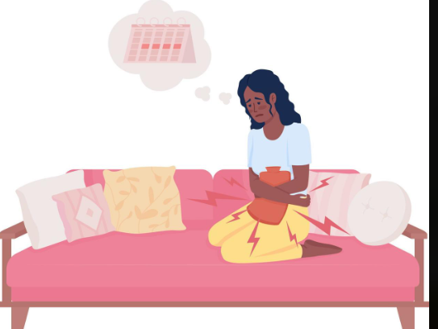

What is PCOS?
Learn what PCOS is, common symptoms, and why early checking matters.
Read full articleLearn about PCOS, periods, and everyday wellness
Learn what PCOS is, common symptoms, and why early checking matters.
Read full article
Break down the cycle phases and how to track your own rhythm.
Read full article
Simple daily habits for energy, mood, and hormone balance.
Read full article
How rest, gentle movement and small routines can make periods kinder on your body.
Read full article